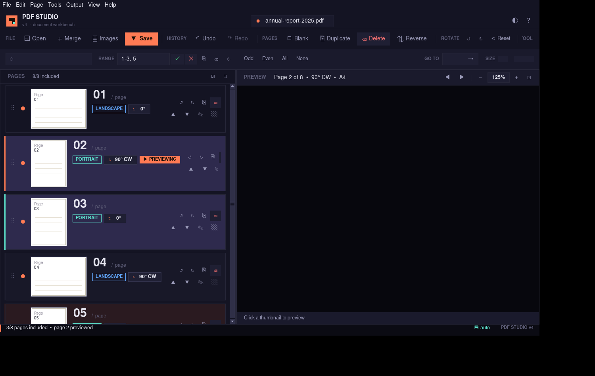
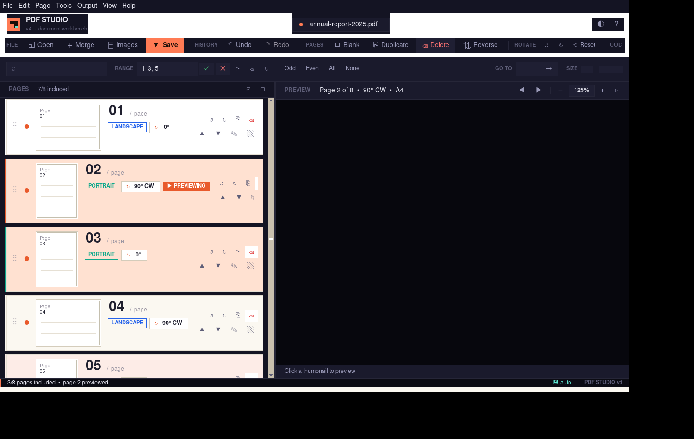

Tkinter · 8.6
1500 × 950 viewport
Inter / JetBrains Mono / Space Grotesk
0 lint errors
14/14 backend hooks implemented


What you're looking at
- Custom titlebar with coral logo badge, filename pill, theme toggle, help button.
- Native menu bar (
File / Edit / Page / Tools / Output / View / Help) styled to match. - Grouped pill-button toolbar — FILE · HISTORY · PAGES · ROTATE · TOOLS · BATCH — with tooltips.
- Sub-toolbar: ⌕ search · RANGE input with ✓ ✕ ⎘ ⌫ ↻ · Odd/Even/All/None · GO TO · thumb size slider.
- Two-pane layout: scrollable page list · preview canvas with its own zoom toolbar.
- Page row cards: drag handle (⋮⋮), include dot (●/○), shadow-framed thumbnail, big monospace page number, orientation + rotation chips, PREVIEWING/EXCLUDED badges, 2-row action cluster (↺ ↻ ⎘ ⌫ ▲ ▼ ✎ ▧).
- Status bar with coral accent stripe, autosave stamp, version badge.